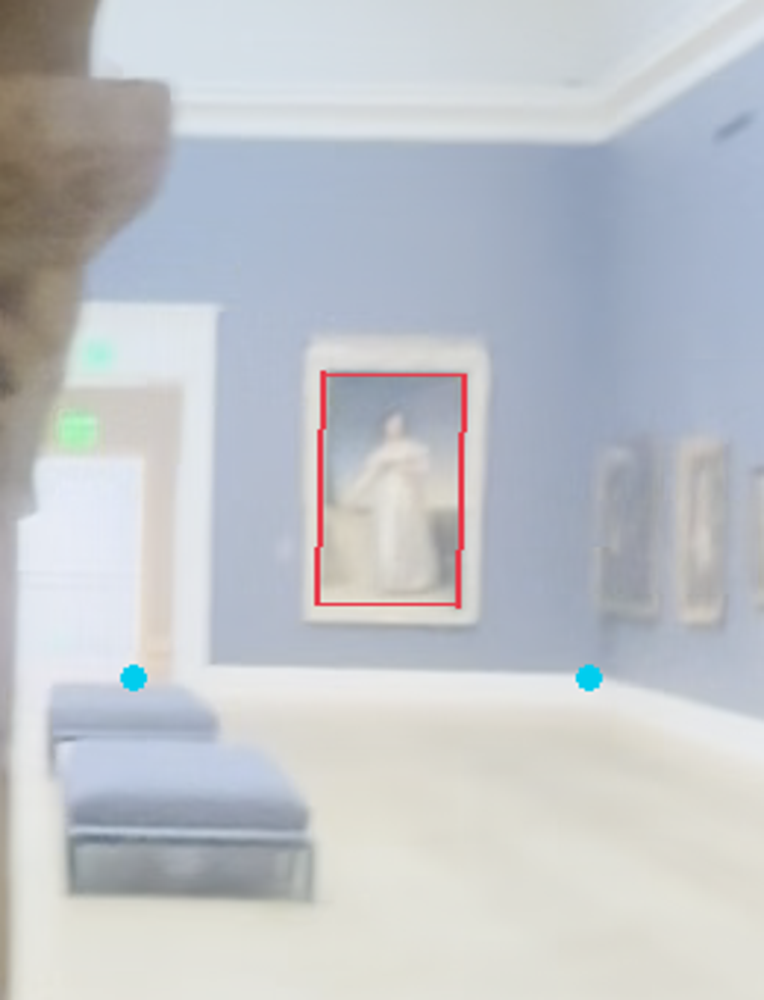
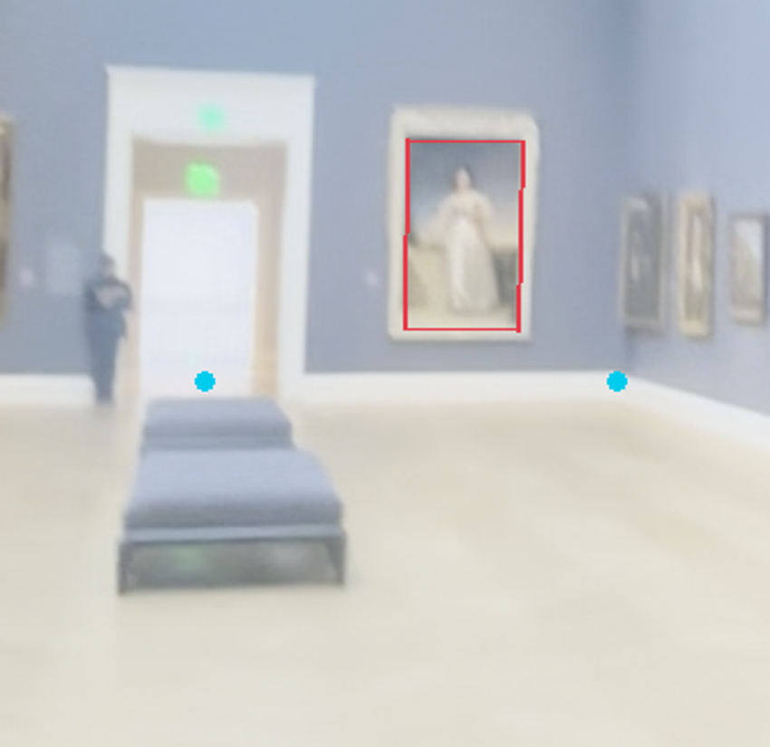
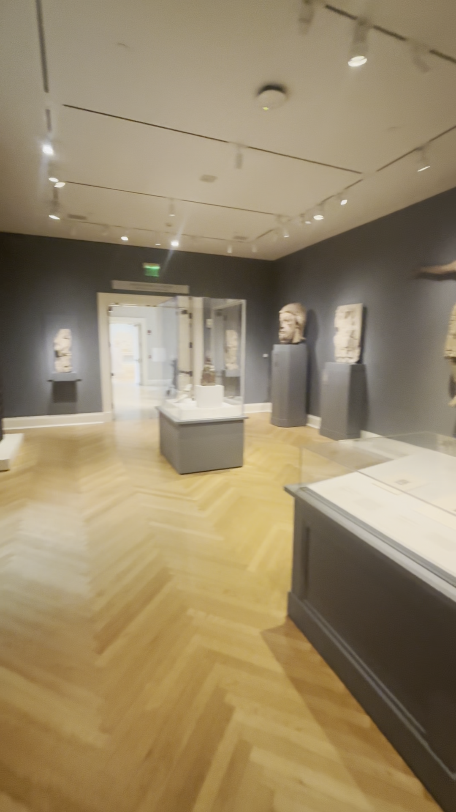
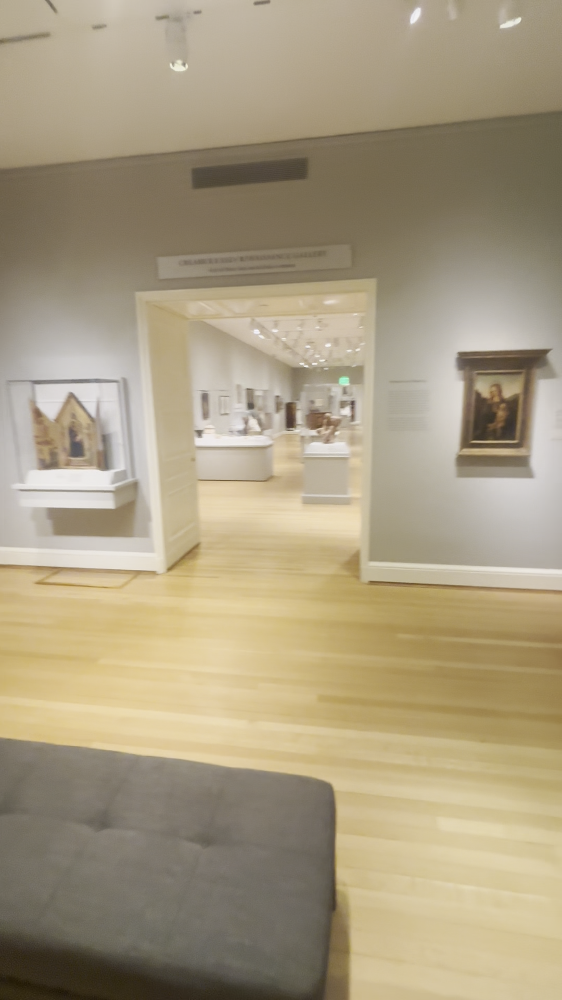
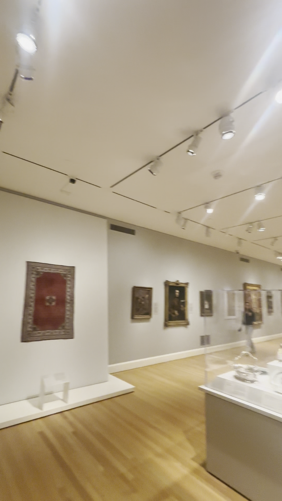

Back to latest Collection preview
The white portrait beyond the portal is Lawrence’s Portrait of Lady Sarah Ingestre60.039. Its RISD catalogue dimensions235.1×142.9cm match the saved Main Hall painting record. Red lines mark its visible canvas. Cyan marks approximate doorway centre and right wall/floor corner.


Two separate source views give9.38m and10.66m if the end doorway is centred. These rough values are compatible with the saved10m Hall width. Blur, recessed canvas, perspective, lens distortion and approximate points limit precision. This plane check does not establish Hall length or fix the adjoining room positions. The current4.60m lateral/17.05m axial map discrepancy remains unresolved.
Exact annotations, source hashes, catalogue record and limitations. No point cloud used, no paid generation, no runtime geometry changed from this estimate.



European68.75s: projecting wall piers, raised plinth, cases and ceiling tracks. Exact offsets still need fitting.